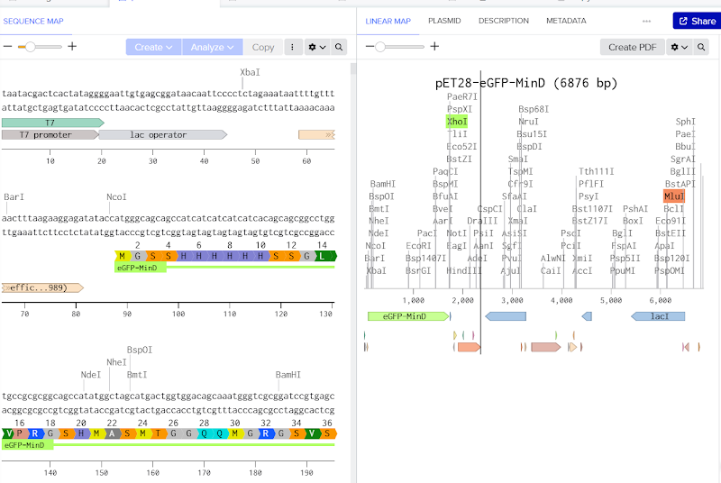
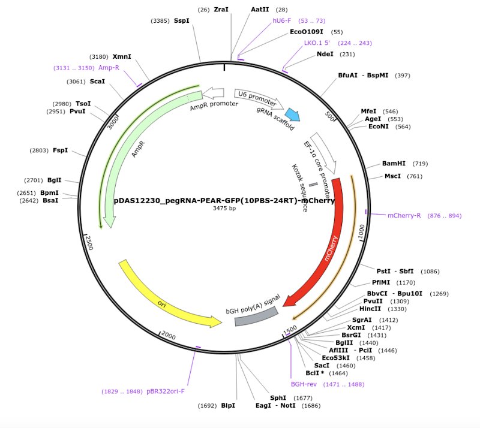
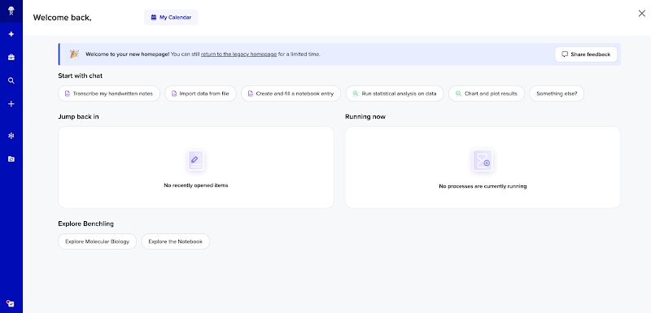
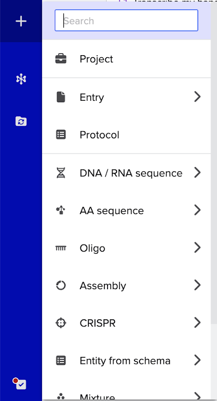
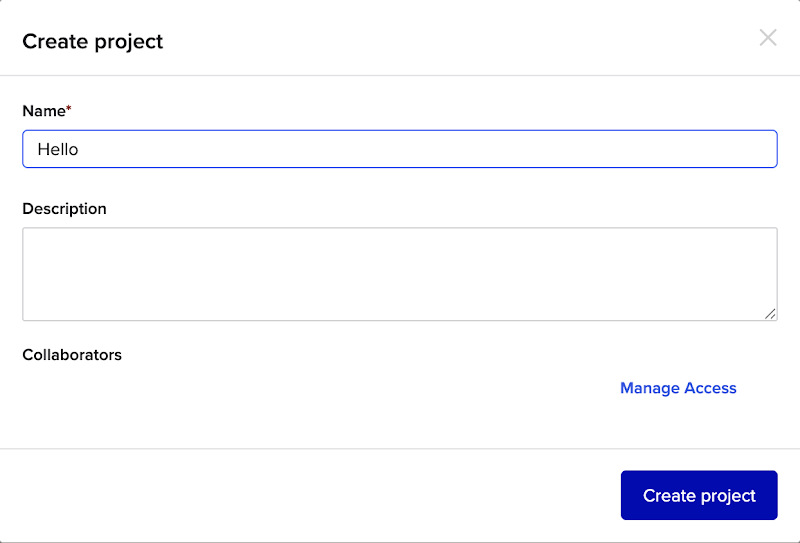
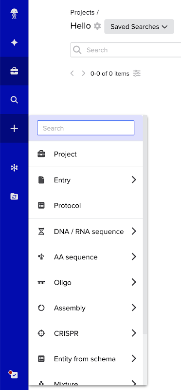
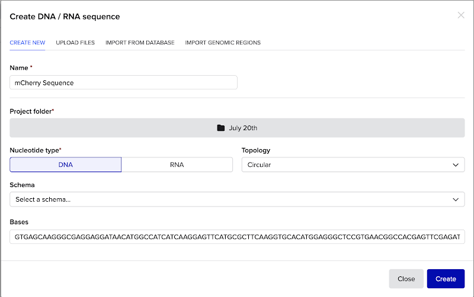
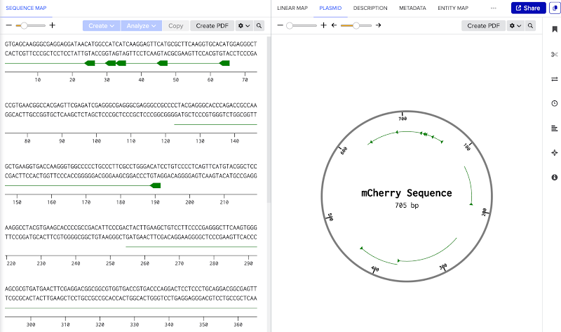
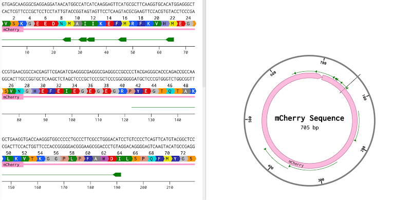

<!doctype html>
<html lang="en">
<head>
<meta charset="UTF-8">
<meta name="viewport" content="width=device-width, initial-scale=1.0">
<title>Module 5: Plasmid DNA Design — SynBase</title>
<link rel="stylesheet" href="../css/style.css?v=73">
</head>
<body>

<header class="site-header" id="site-header"></header>
<section class="module-hero" id="module-hero"></section>

<div class="container narrow">
  <div class="page-nav-mount" id="page-nav-mount"></div>
</div>
<main class="container narrow" id="page-viewport"></main>
<div class="container narrow">
  <div class="page-footer-nav" id="page-footer-nav"></div>
</div>

<script src="../js/modules-meta.js?v=14"></script>
<script src="../js/progress.js?v=25"></script>
<script src="../js/quiz-engine.js?v=18"></script>
<script>
const MODULE = {
  id: "module5",
  number: 5,
  title: "Plasmid DNA Design",
  lede: "You've learned the parts that make up a genetic circuit — now it's time to see how those parts get packaged into a real, physical plasmid, and to build one yourself using the same tools researchers use every day.",
  pages: [
    {
      id: "5.1r", type: "read", title: "Welcome to Plasmid Design",
      html: `
        <p>Welcome to Module 5! So far, you've learned about the individual parts that make up a genetic circuit. Now we're going to see how those parts get packaged into something a cell can actually take up and use: a plasmid.</p>
        <p>Quick recap from Module 2: plasmids are small, circular pieces of DNA. Their circular shape is exactly what makes them so easy to insert into a cell — with no exposed ends, they're much harder for a cell's exonucleases (enzymes that chew away at loose DNA ends) to degrade.</p>
        <p>Back in Module 3, you took a real-world need and scoped it into a research question. A plasmid like the one you'll design in this module is often the literal physical thing you'd build to answer that question.</p>
        <p>Today, we'll open one up and look at exactly what's inside.</p>
      `
    },
    {
      id: "5.2r", type: "read", title: "Quick Reminder: Circuit Parts from Module 4",
      html: `
        <p>Plasmids are built from genetic circuits, so today leans heavily on Module 4. As a quick reminder before we dive in:</p>
        <p>Promoters and terminators determine what gets transcribed — a promoter marks where transcription starts, a terminator marks where it stops.</p>
        <p>And translation initiation sites determine what gets translated — the Kozak sequence for plant and mammalian cells, the Shine-Dalgarno sequence for bacterial cells — followed by the coding sequence itself.</p>
        <p>If you want the full reference tables, they're still back in Module 4. Today, we'll put these same parts to work inside a real plasmid.</p>
      `
    },
    {
      id: "5.3r", type: "read", title: "What You'll Learn Today",
      html: `
        <p>This module has four parts. First, you'll learn the components of a plasmid. Second, you'll learn two different ways to physically join those components together — restriction enzyme cloning and Gibson Assembly. Third, you'll create a free Benchling account, a tool researchers use to design and store DNA sequences. Fourth, you'll design a plasmid of your own.</p>
      `
    },
    {
      id: "5.4r", type: "read", title: "The Two Parts of a Plasmid: Backbone and Insert", part: "Part 1: Components of a Plasmid",
      html: `
        <p>Every plasmid is made of two parts. The insert is the piece of foreign DNA you actually want a cell to express — the gene of interest. The backbone is everything else: the machinery that lets the plasmid survive inside a cell, multiply, and express whatever's encoded in the insert.</p>
      `
    },
    {
      id: "5.5r", type: "read", title: "Backbone Components", part: "Part 1: Components of a Plasmid",
      html: `
        <p>The backbone has four key components:</p>
        <ul>
          <li><strong>Backbone promoter</strong> — the sequence next to the insert that signals where transcription should begin.</li>
          <li><strong>Origin of replication (ori)</strong> — initiates DNA replication and determines how many copies of the plasmid each cell makes.</li>
          <li><strong>Selectable marker</strong> — usually a gene for antibiotic resistance. Add that antibiotic to the growth medium, and only cells carrying the plasmid survive.</li>
          <li><strong>Multiple cloning site (MCS)</strong> — a region containing restriction sites where the insert gets pasted in. We won't focus much on this in this course, but it matters for the next page.</li>
        </ul>
      `
    },
    {
      id: "5.6p", type: "practice", title: "Practice: Backbone Components", part: "Part 1: Components of a Plasmid",
      question: {
        prompt: "Which of the following represents the comprehensive list of plasmid backbone components?",
        options: [
          { text: "Backbone Promoter, Origin of Replication, Selectable Marker, Multiple Cloning Site", correct: true },
          { text: "Coding Sequence, Backbone Promoter, Origin of Replication, Multiple Cloning Site", correct: false },
          { text: "Backbone Promoter, Coding Sequence, Linkers, Fluorescent Reporters", correct: false },
          { text: "Backbone Promoter, Origin of Replication, Coding Sequence, Fluorescent Reporters", correct: false }
        ],
        explanation: "Coding sequence, linkers, and fluorescent reporters are all insert components, not backbone components. The backbone's four parts are the promoter, origin of replication, selectable marker, and multiple cloning site."
      }
    },
    {
      id: "5.7r", type: "read", title: "Insert Components", part: "Part 1: Components of a Plasmid",
      html: `
        <p>The insert's core is the coding sequence — the part that actually gets translated into protein. It can include:</p>
        <ul>
          <li><strong>Sensors</strong> — genes that detect a specific molecule or signal.</li>
          <li><strong>Fluorescent reporters</strong> — genes that make the cell glow when expressed.</li>
          <li><strong>Linkers</strong> — short sequences that connect two distinct protein parts together.</li>
          <li><strong>2A sequences</strong> — sequences that separate two naturally-linked proteins into two independent parts.</li>
        </ul>
      `
    },
    {
      id: "5.8r", type: "read", title: "The Backbone by Cell Type", part: "Part 1: Components of a Plasmid",
      html: `
        <p>Before designing a backbone, it helps to know how the plasmid will actually get into a cell, because that determines which parts it needs.</p>
        <ul>
          <li>Bacterial cells take up plasmid DNA through heat shock or electroporation, so the backbone just needs a bacterial promoter, origin of replication, and selectable marker.</li>
          <li>Mammalian cells are trickier: plasmid DNA has to be built up in bacteria first, since bacteria replicate fast enough to amplify it into many copies. So a mammalian-cell backbone needs promoters from both bacteria and mammalian cells.</li>
          <li>Plant cells follow the same logic — bacterial amplification first — so their backbones need both bacterial and plant promoters.</li>
        </ul>
      `
    },
    {
      id: "5.9p", type: "practice", title: "Practice: Designing for Mammalian Cells", part: "Part 1: Components of a Plasmid",
      question: {
        prompt: "Which of the following represents an acceptable combination of promoters, origins, and markers for inserting a plasmid in a mammalian cell?",
        options: [
          { text: "CMV promoter, SV40 origin, PuroR marker.", correct: false },
          { text: "lac promoter, pUC origin, AmpR marker.", correct: false },
          { text: "CMV promoter, SV40 origin, AmpR marker.", correct: false },
          { text: "Lac promoter, pUC origin, AmpR marker; CMV promoter, SV40 origin, PuroR marker.", correct: true }
        ],
        explanation: "A mammalian-cell plasmid needs both a bacterial set of parts (to amplify in bacteria first) and a mammalian set of parts (to actually express in the target cell) — so the correct answer includes both combinations together, not just one."
      }
    },
    {
      id: "5.10r", type: "read", title: "The Insert by Cell Type", part: "Part 1: Components of a Plasmid",
      html: `
        <p>The insert follows the same cell-type logic. It begins with a translation initiation sequence — the Shine-Dalgarno sequence for bacteria, or a Kozak sequence (commonly GCCGCCACCATG) for mammalian and plant cells, the same two sequences you just reviewed from Module 4.</p>
        <p>From there, the insert can include any combination of sensors, linkers, 2A sequences, and fluorescent reporters (like GFP, mCherry, and mTagBFP), and it always ends with a stop codon: TAA, TAG, or TGA.</p>
      `
    },
    {
      id: "5.11p", type: "practice", title: "Practice: Insert Design Check", part: "Part 1: Components of a Plasmid",
      question: {
        prompt: "Which of the following represents a FALSE statement in designing the plasmid insert?",
        options: [
          { text: "For bacteria, the translation initiation sequence is the Shine-Dalgarno sequence — usually AGGAGG, about 8 bp upstream of the start codon (ATG).", correct: false },
          { text: "For mammalian and plant cells, the translation initiation sequence is the Kozak sequence, often GCCGCCACCATG.", correct: false },
          { text: "Linkers are often used to connect two distinct parts.", correct: false },
          { text: "The fluorescent reporters often act as the ending sequence for the insert.", correct: true }
        ],
        explanation: "The insert always ends with a stop codon, not a fluorescent reporter — a reporter can sit anywhere in the insert, but it's the stop codon that actually signals translation to end."
      }
    },
    {
      id: "5.12p", type: "practice", title: "Practice: Plasmid Design Workflow", part: "Part 1: Components of a Plasmid",
      question: {
        prompt: "Which of the following represents an incorrect statement in the plasmid design workflow?",
        options: [
          { text: "There is more than one possible type of promoter one could use when designing a plasmid to insert into a plant, mammalian, or bacterial cell.", correct: false },
          { text: "Kozak sequences are used for mammalian and plant cells, but not for bacterial cells.", correct: false },
          { text: "Building a plasmid for a mammalian cell only requires one promoter — a mammalian cell promoter.", correct: true },
          { text: "GFP, mCherry, and mTagBFP are all examples of fluorescent reporters.", correct: false }
        ],
        explanation: "As you saw on the backbone-by-cell-type page, a mammalian-cell plasmid actually needs two promoters — one bacterial (for amplification) and one mammalian (for expression) — so this is the incorrect statement."
      }
    },
    {
      id: "5.13r", type: "read", title: "Worked Example: The AddGene mCherry Plasmid", part: "Part 1: Components of a Plasmid",
      html: `
        <p>Let's put this all together with a real plasmid: pDAD12230_pegRNA-PEAR-GFP(10PBS-24RT)-mCherry, found on AddGene. This plasmid expresses a pegRNA (prime-editing guide RNA) targeting a separate PEAR-GFP plasmid, and also expresses an mCherry fluorescent reporter so researchers can confirm the plasmid delivered successfully.</p>
        <p>Here are its backbone components:</p>
        <ul>
          <li><strong>ori</strong> — a bacterial origin of replication (specifically, the pUC origin). "Ori" is a common placeholder name for this component.</li>
          <li><strong>AmpR Promoter</strong> — the promoter driving the ampicillin-resistance marker.</li>
          <li><strong>AmpR</strong> — the ampicillin-resistance selectable marker itself.</li>
          <li><strong>U6 Promoter</strong> — a mammalian promoter that expresses the gRNA scaffold.</li>
          <li><strong>EF-1 alpha</strong> — a mammalian promoter that expresses the mCherry reporter.</li>
        </ul>
      `
    },
    {
      id: "5.14r", type: "read", title: "Insert Components in This Plasmid", part: "Part 1: Components of a Plasmid",
      html: `
        <p>And here are its insert components:</p>
        <ul>
          <li>A gRNA scaffold</li>
          <li>A Kozak sequence, right before mCherry</li>
          <li>The mCherry fluorescent reporter itself</li>
          <li>A bGH poly(A) signal after mCherry, acting as the terminator</li>
        </ul>
        <p>Notice how nearly everything you just learned about — promoter, marker, Kozak sequence, reporter, terminator — shows up in this one real plasmid.</p>
      `
    },
    {
      id: "5.15s", type: "shortanswer", title: "Short Answer: The Origin of Replication", part: "Part 1: Components of a Plasmid",
      shortAnswer: {
        prompt: "In the AddGene worked example (pDAD12230_pegRNA-PEAR-GFP(10PBS-24RT)-mCherry), what is the specific bacterial origin of replication used in the plasmid's backbone?",
        acceptedAnswers: ["pUC origin", "pUC ori", "pUC"],
        explanation: "The worked example's backbone lists \"ori — a bacterial origin of replication (specifically, the pUC origin).\" \"Ori\" is just the generic placeholder name for the component; the actual origin used in this plasmid is the pUC origin."
      }
    },
    {
      id: "5.16p", type: "practice", title: "Practice: Reading the eGFP-MinD Plasmid", part: "Part 1: Components of a Plasmid",
      question: {
        prompt: 'Observe this plasmid. Select all the statements that are true.',
        multi: true,
        options: [
          { text: "eGFP-MinD is a fluorescent reporter in the plasmid.", correct: true },
          { text: "KanR is a bacterial selection marker in the plasmid.", correct: true },
          { text: "T7 is used as the mammalian promoter in the plasmid.", correct: false },
          { text: "The lacI is a repressor protein that binds to the lac operator, which blocks RNA polymerase from transcribing the fluorescent reporter.", correct: true }
        ],
        explanation: "T7 is a bacterial promoter, not a mammalian one — that's what makes the third statement false. The rest are accurate: eGFP-MinD is a fluorescent fusion reporter, KanR is a bacterial resistance marker, and lacI is a classic repressor that blocks transcription until it releases the operator."
      }
    },
    {
      id: "5.17p", type: "practice", title: "Practice: Reading the BFP Plasmid", part: "Part 1: Components of a Plasmid",
      question: {
        prompt: "Here is a plasmid that encodes BFP (blue fluorescent protein). Select all the statements that are true.",
        multi: true,
        options: [
          { text: "This plasmid is a mammalian expression vector.", correct: true },
          { text: "This plasmid uses the CMV promoter for mammalian cell expression, and the SV40 promoter for expressing the NeoR/KanR resistance genes in mammalian cells.", correct: true },
          { text: "This plasmid uses the AmpR promoter for bacterial cell expression.", correct: true },
          { text: "EBFP2 is the fluorescent reporter in the plasmid.", correct: true }
        ],
        explanation: "All four statements are accurate. This plasmid needs both mammalian components (a CMV promoter for the reporter, an SV40 promoter for the NeoR/KanR marker in mammalian cells) and bacterial components (an AmpR promoter, for propagating the plasmid in bacteria), with EBFP2 as the actual fluorescent reporter."
      }
    },
    {
      id: "5.18f", type: "freeresponse", title: "Discussion: Explore a Plasmid on AddGene", part: "Part 1: Components of a Plasmid",
      freeResponse: {
        prompt: "Go to AddGene, search for a plasmid that interests you, and paste the link (and a screenshot, if you can take one) into your response. Then write down every backbone and insert component you can identify, using what you just learned about backbones and inserts."
      }
    },
    {
      id: "5.19r", type: "read", title: "Restriction Enzyme Cloning: The Traditional Method", part: "Part 2: Cloning Methods",
      html: `
        <p>Now that you know what a plasmid's parts are, how do backbone and insert actually get physically joined together? The traditional method is restriction enzyme cloning. Restriction enzymes are proteins, originally isolated from bacteria, that cut DNA at specific short recognition sequences. Cutting both the backbone and the insert with enzymes that recognize the same sequence — inside the multiple cloning site you saw earlier — leaves matching "sticky ends" on each piece. DNA ligase then seals those matching ends together, joining backbone and insert into one continuous plasmid.</p>
        <p>This is reliable, but it depends entirely on having the right cut sites available in the right places — which is exactly the limitation Gibson Assembly, covered next, was designed to get around.</p>
      `
    },
    {
      id: "5.20p", type: "practice", title: "Practice: Restriction Cloning vs. Gibson Assembly", part: "Part 2: Cloning Methods",
      question: {
        prompt: "What does restriction enzyme cloning rely on that Gibson Assembly (covered next) does not?",
        options: [
          { text: "Cutting DNA at specific recognition sequences with restriction enzymes to create matching sticky ends.", correct: true },
          { text: "A 5' exonuclease that chews back DNA ends.", correct: false },
          { text: "Matching overhang sequences that anneal directly, without being cut.", correct: false },
          { text: "DNA ligase to seal the joined fragments together.", correct: false }
        ],
        explanation: "Restriction enzyme cloning depends on cutting DNA at specific recognition sequences to make sticky ends — Gibson Assembly, which you'll see next, skips the cutting step entirely. DNA ligase is actually used in both methods, so it isn't something unique to restriction cloning."
      }
    },
    {
      id: "5.21r", type: "read", title: "What Is Gibson Assembly?", part: "Part 2: Cloning Methods",
      html: `
        <p>Gibson Assembly is another cloning method that joins DNA fragments together — but instead of cutting them, it fuses matching overhangs directly. One common use is joining a plasmid's backbone and insert into one complete piece of DNA.</p>
      `
    },
    {
      id: "5.22r", type: "read", title: "The Gibson Assembly Process", part: "Part 2: Cloning Methods",
      html: `
        <p>Gibson Assembly uses three enzymes, in sequence:</p>
        <ol>
          <li>A 5' exonuclease chews back the 5' ends of both DNA fragments, exposing single-stranded overhangs.</li>
          <li>The fragments anneal — their matching overhang sequences pair up and stick together.</li>
          <li>DNA polymerase extends the 3' ends to fill in the newly exposed gaps.</li>
          <li>DNA ligase seals any remaining nicks, leaving one continuous piece of DNA.</li>
        </ol>
      `
    },
    {
      id: "5.23o", type: "ordering", title: "Ordering: The Gibson Assembly Process", part: "Part 2: Cloning Methods",
      ordering: {
        prompt: "Arrange the following steps of Gibson Assembly in the correct order.",
        items: [
          "A 5' exonuclease chews back the ends of the DNA fragments.",
          "The fragments anneal via their matching overhang sequences.",
          "DNA polymerase fills in the gaps.",
          "DNA ligase seals the remaining nicks."
        ],
        explanation: "The exonuclease has to chew back the ends before the overhangs can anneal, and the gaps have to be filled by polymerase before ligase can seal the remaining nicks — reversing any of those steps wouldn't work."
      }
    },
    {
      id: "5.24p", type: "practice", title: "Practice: What Gibson Assembly Is Not", part: "Part 2: Cloning Methods",
      question: {
        prompt: "Which of the following is NOT true in Gibson assembly?",
        options: [
          { text: "It involves sealing different DNA fragments together.", correct: false },
          { text: "A series of three enzymes helps chew back 5' ends, fill gaps, and seal nicks.", correct: false },
          { text: "It involves making cuts at restriction sites.", correct: true },
          { text: "One way Gibson Assembly is used is to join the backbone and insert components together.", correct: false }
        ],
        explanation: "Gibson Assembly doesn't use restriction enzymes or cut sites at all — that's exactly what makes it useful, since it removes the need for a multiple cloning site in the first place."
      }
    },
    {
      id: "5.25r", type: "read", title: "How Gibson Assembly Changes Plasmid Design", part: "Part 2: Cloning Methods",
      html: `
        <p>Because Gibson Assembly glues fragments together using their matching 5' and 3' overhangs rather than restriction sites, it makes the multiple cloning site unnecessary — you don't need pre-defined cut sites if you're not cutting anything.</p>
        <p>This is also how plasmids are typically ordered in practice. On a service like Twist Bioscience, you order the backbone and insert sequences separately, then combine them yourself using a Gibson Assembly master mix — a solution already containing all three enzymes (5' exonuclease, DNA polymerase, and DNA ligase) needed to stitch the fragments together.</p>
      `
    },
    {
      id: "5.26r", type: "read", title: "Creating a Benchling Account", part: "Part 3: Introduction to Benchling",
      html: `
        
        <p>To actually design a plasmid yourself, you'll need a place to build and store DNA sequences — that's what Benchling is for. It's free and browser-based, and it's a real tool used in research labs, so this is also a chance to get comfortable with something you may well run into again.</p>
        <p>Go to Benchling and create a free account with your email address. It only takes a couple of minutes, and nothing beyond an email address is required to sign up.</p>
        
      `
    },
    {
      id: "5.27r", type: "read", title: "Navigating Benchling", part: "Part 3: Introduction to Benchling",
      html: `
        <p>Once you're logged in, you'll land on the Benchling homepage.</p>
        
        <p>From here:</p>
        <ul>
          <li>Click the "+" button in the left panel,
            
            then "Project" to start a new project — give it a name and short description.
            
          </li>
          <li>Inside your project, click "Create DNA/RNA Sequence."
            
          </li>
          <li>Give the sequence a title, and paste or type in the bases of your gene of interest.
            
          </li>
        </ul>
        <p>Your sequence will then appear in the project, ready to view or edit —</p>
        
        <p>for example, you could try pasting in the mCherry sequence from the plasmid we looked at earlier.</p>
        
      `
    },
    {
      id: "5.28m", type: "matching", title: "Matching Exercise: Module 5 Vocabulary Recap", part: "Part 4: Design Your Own Plasmid",
      matching: {
        instructions: "Match the term to its definition:",
        pairs: [
          { left: "Origin of replication", right: "Initiates DNA replication and sets how many copies of the plasmid each cell makes" },
          { left: "Selectable marker", right: "A gene, often for antibiotic resistance, that lets only plasmid-carrying cells survive" },
          { left: "Multiple cloning site", right: "The region with restriction sites where an insert is pasted in — unnecessary with Gibson Assembly" },
          { left: "Kozak sequence", right: "Marks the ribosome's start site in mammalian and plant cells" },
          { left: "Shine-Dalgarno sequence", right: "Marks the ribosome's start site in bacterial cells" },
          { left: "Gibson Assembly", right: "A cloning method that joins DNA fragments by fusing matching overhangs, without restriction sites" }
        ]
      }
    },
    {
      id: "5.29f", type: "freeresponse", title: "Discussion: Create Your Own Plasmid", part: "Part 4: Design Your Own Plasmid",
      freeResponse: {
        prompt: "It's time to design a plasmid of your own. Choose one of two options:<br><br><strong>Option 1 — The Challenge:</strong> Come up with an idea for a plasmid, find real sequences for its parts on AddGene, and assemble it in Benchling. Take a screenshot and describe your plasmid in 2–3 sentences.<br><br><strong>Option 2 — The Easier Option:</strong> Come up with an idea for a plasmid and sketch its basic parts on paper. Take a picture of your drawing and describe your plasmid in 2–3 sentences."
      }
    }
  ]
};

(async () => {
  const user = await bootstrapAuthAndProgress(false);
  if (!user) return;
  renderModulePage(MODULE);
})();
</script>
</body>
</html>
